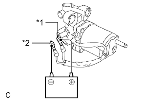

HYDRAULIC BRAKE BOOSTER > INSPECTION |
| 1. CHECK BRAKE BOOSTER PUMP ASSEMBLY |
|  |
Apply battery voltage to the brake booster pump cables, and check the operation of the pump motor.
| Measurement Condition | Specified Condition |
| Battery positive (+) voltage → Red cable terminal | Pump motor operates |
| Battery negative (-) voltage → Black cable terminal |
| *1 | Red Cable |
| *2 | Black Cable |